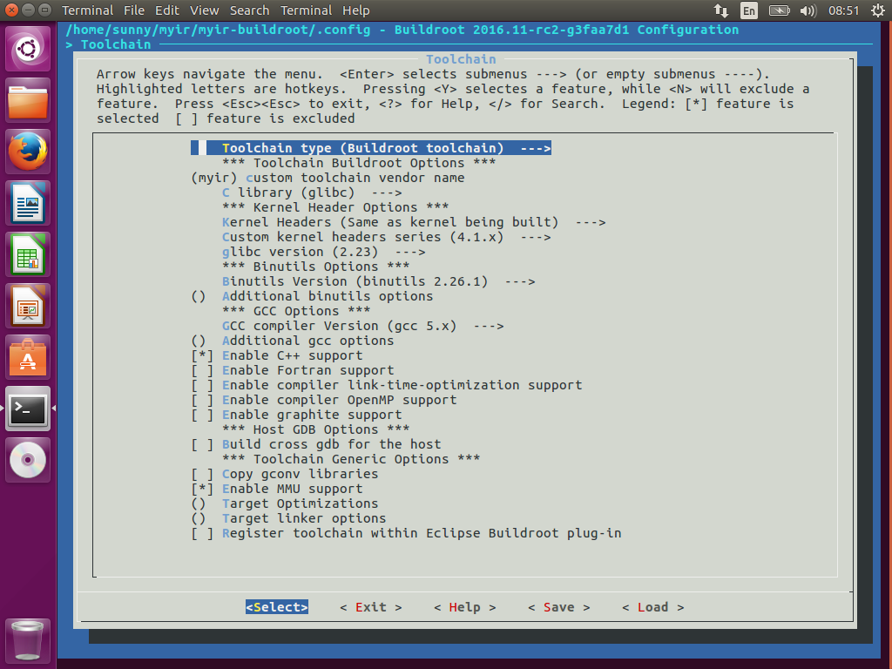
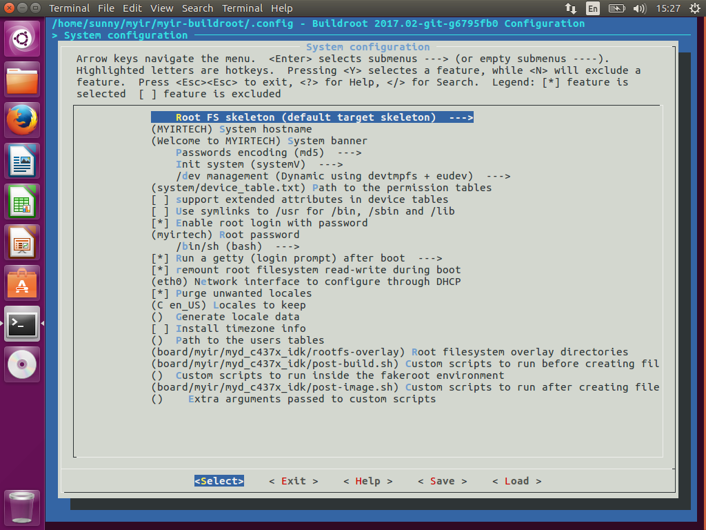
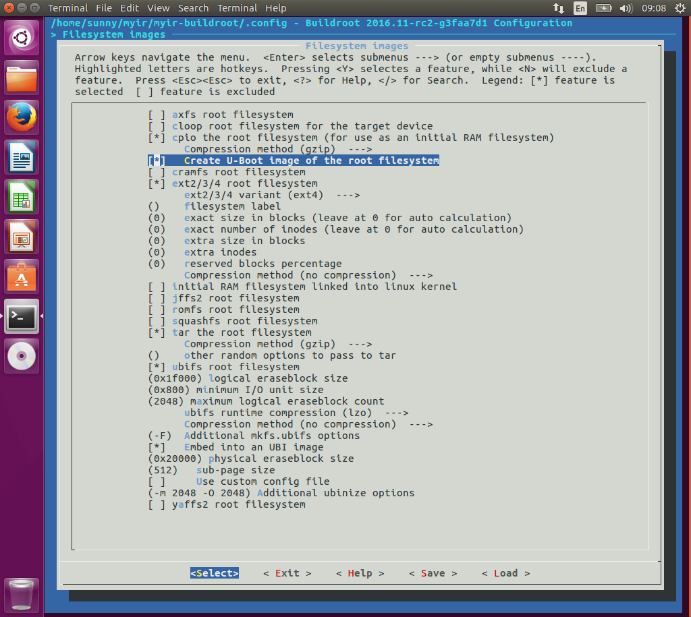
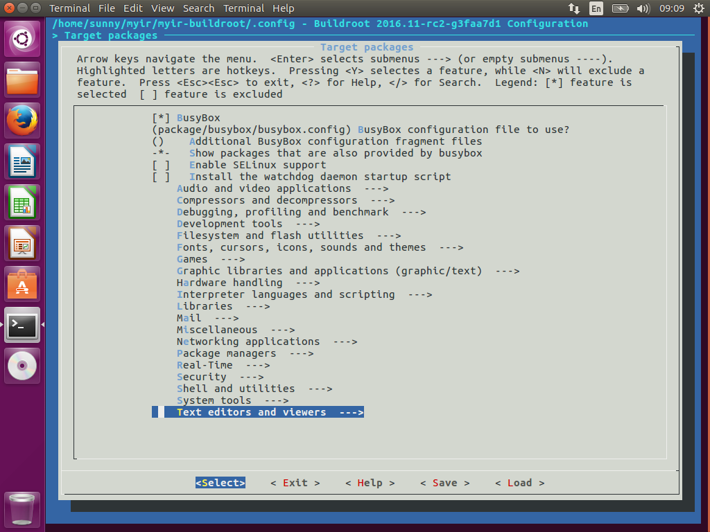

3.3 Build Filesystem
This section covers the building of filesystem with Buildroot.
3.3.1 Preparation before Building Buildroot
Note1: After modifying source code of Kernel or U-boot, Buildroot can not update and build it automatically. Customers should commit it to the master branch of their local git repo manually.
Note2: If the source code of Kernel is updated, before building Buildroot again, customers should remove the package "myir-buildroot/dl/linux-master.tar.gz" and the "myir-buildroot/output/build/linux-master" and "myirbuildroot\output\build\linux-headers-master" directories manually. The same to rebuilding of U-boot.
Note3：Before building u-boot and kernel with buildroot, users need to create their own git repository for u-boot and kernel, then replace the git path in the configuration files.
Copy the Buildroot source package customized by MYIR Tech from 04-Linux_Source/Filesystem/myir-buildroot.tar.gz of our release package to work directory and uncompress it. The content of myir-buildroot.tar.gz is shown below:
$ ls -al <WORKDIR>/Filesystem/myir-buildroot
arch CHANGES configs dl linux output support
board Config.in COPYING docs Makefile package system
boot Config.in.legacy DEVELOPERS fs Makefile.legacy README toolchain
For more details about the file structure of Buildroot, please refer to Buildroot manual https://buildroot.org/downloads/manual/manual.html.The board support files for MYD AM335X series development boards are located at <WORKDIR>/Filesystem/myir-buildroot/board/myir/myd_c335x,<WORKDIR>/Filesystem/myir-buildroot/board/myir/myd_y335x,<WORKDIR>/Filesystem/myir-buildroot/board/myir/myd_j335x
3.3.2 Buildroot Configuration
The configuration files for Buildroot are all located at <WORKDIR>/Filesystem/myir-buildroot/configs/.
| Config File | Description |
|---|---|
| myd_c335x_defconfig | Buildroot configuration without QT5 for MYC-AM335X CPU Module with NAND Flash |
| myd_c335x_emmc_defconfig | Buildroot configuration without QT5 for MYC-AM335X CPU Module With EMMC |
| myd_c335x_qt5_defconfig | Buildroot configuration with QT5 for MYD-AM335X development board with NAND |
| myd_j335x_defconfig | Buildroot configuration without QT5 for MYC-AM335X-J CPU Module with NAND Flash |
| myd_j335x_emmc_defconfig | Buildroot configuration without QT5 for MYC-AM335X-J CPU Module with EMMC |
| myd_j335x_qt5_defconfig | Buildroot configuration with QT5 for MYD-AM335X-J development board with NAND Flash |
| myd_y335x_defconfig | Buildroot configuration without QT5 for MYC-AM335X-Y CPU Module with NAND Flash |
| myd_y335x_defconfig | Buildroot configuration without QT5 for MYC-AM335X-Y CPU Module with EMMC |
| myd_y335x_qt5_defconfig | Buildroot configuration with QT5 for MYD-AM335X-Y development board with NAND Flash |
$ cd myir-buildroot
$ make clean
$ make myd_y335x_defconfig
Customers can change the configuration by its kernel-like menuconfig with the command make menuconfig. The main configuration for MYD-AM335X-Y development board are listed below.
Configuration for Cross Compiler:
Buildroot can use internal cross compile toolchain generated by Buildroot itself, it can also use external cross compile toolchain. In this document, we choose the internal cross compile toochain, it will be generated and stored to <WORKDIR>/Filesystem/myir-buildroot/output/host/usr/bin/ after compiling.

Configuration for System:
The configuration for system includes the name of the target system, the welcome message, the init subsystem(busybox/systemV/systemd) and device manage system,
customers can also set the password for root user by configuration. For MYD-AM335X-Y development board, the password for root is set to myirtech as shown below.
If customers do not need to set password, they no need to config the password.

Configuration for Bootloader:
The configuration for Bootloader includes the URL of the source code of U-boot, the U-boot configuration file name, the output images of U-boot and so on. They are shown in Figure 3-3-3 below.
We fetch the source code of U-boot with git from local repository. Users need to build their own git repository, they can also use other protocols or even local directory. For other protocols, please refer to the Buildroot manual.
Create a U-boot git repository from myir-u-boot.tar.gz:
$ cd ~/
$ tar zxvf myir-u-boot.tar.gz
$ cd myir-u-boot
$ git init
$ git add . -f
$ git commit -m "Initial Version" -a
And then modify and replace the two items of the configuration files located at <WORKDIR>/Filesystem/buildroot/configs/myd_y335x_defconfig and <WORKDIR>/Filesystem/buildroot/configs/myd_y335x_qt5_defconfig, as shown below:
BR2_TARGET_UBOOT_CUSTOM_REPO_URL="~/myir-u-boot/.git"
BR2_TARGET_UBOOT_CUSTOM_REPO_VERSION="master"
Configuration for Kernel:
The configuration of Kernel is similar to that of bootloader.

We fetch the source code of Kernel with git from local repository. Users need to build their own git repository, they can also use other protocols or even local directory. For other protocols, please refer to the Buildroot manual.
Create a kernel git repository from myir-kernel.tar.gz:
$ cd ~/
$ tar zxvf myir-kernel.tar.gz
$ cd myir-u-boot
$ git init
$ git add . -f
$ git commit -m "Initial Version" -a
And then modify and replace the two items of the configuration files located at <WORKDIR>/Filesystem/buildroot/configs/myd_y335x_defconfig and <WORKDIR>/Filesystem/buildroot/configs/myd_y335x_qt5_defconfig, as shown below:
BR2_TARGET_KERNEL_CUSTOM_REPO_URL="~/myir-kernel/.git"
BR2_TARGET_KERNEL_CUSTOM_REPO_VERSION="master"
Configuration for Filesystem:
The configuration for filesystem determines what filesystem images are generated in myir-buildroot/output/images/ directory after compiling, If we choose ramdisk in the configuration, we will get a ramdisk filesystem image. EXT2/4, UBIFS, and rootfs tar package can also be create if they are choosed in configuration.
By the way, the rootfs.tar.gz can be uncompressed and used as the nfsroot directory, it can also be made to other formats of filesystem images by host mtd-utils.
For example, we can create UBIFS filesystem image without building Buildroot again after doing some modification for rootfs.Firstly, we create a file ubinize.cfg as shown below:
[ubifs]
mode=ubi
vol_id=0
vol_type=dynamic
vol_name=rootfs
vol_alignment=1
vol_flags=autoresize
image=rootfs.ubifs
Then, make a UBIFS image with UBIFS tools by the following processes:
$ export PATH=$PATH:<WORKDIR>/Filesystem/myir-buildroot/output/host/usr/sbin
$ tar zxvf rootfs.tar.gz
$ mkfs.ubifs -d rootfs -e 0x1f000 -c 2048 -m 0x800 -x lzo -F -o rootfs.ubifs
$ ubinize -o rootfs.ubi -m 0x800 -p 0x20000 -s 512 -m 2048 -O 2048 ubinize.cfg

Configuration for Target Packages:
The configuration for target packages is easier, but it is changed more frequently. Customers can choose some hardware tools, such as I2C-tools, spi-tools, can-utils and so on, build them into the filesystem images for debugging. Some network utils, such as DHCP, TFTP, SSH and so on, can aslo be choosed and built into the filesystem images for production. Most commonly used tools are included in the target packages of Buildroot. Customers can also write new target packages and integrate them to Buildroot, please refer to https://buildroot.org/downloads/manual/manual.html#adding-packages for details.

3.3.3 Build Buildroot
Customers can build Buildroot just like building kernel as shown below:
$ cd myir-buildroot
$ make
An output directory is generated during compilation，The resulte output image files are located at the <WORKDIR>/Filesystem/myir-buildroot/output/imagesdirectory.
$ls -al output/images
boot.vfat MLO_usbmsc rootfs.cpio rootfs.tar u-boot_emmc.img u-boot_usbmsc.img uEnv.txt
MLO myd_y335x.dtb rootfs.cpio.gz rootfs.tar.gz u-boot.img uEnv_mmc.txt uEnv_usbmsc_ramdisk.txt
MLO_emmc myd_y335x_emmc.dtb rootfs.cpio.uboot rootfs.ubi u-boot_nand.img uEnv_ramdisk.txt uEnv_usbmsc.txt
MLO_nand ramdisk.gz rootfs.ext2 rootfs.ubifs u-boot_sd.img uEnv_sd_ramdisk.txt zImage
MLO_sd readme.txt rootfs.ext4 sdcard.img u-boot-spl.bin uEnv_sd.txt
The bootloader, kernel and all kinds of filesystem images are generated all in one step, they will be introduced in the subsequent section.
A cross compile toolchain is also generated at <WORKDIR>/Filesystem/myir-buildroot/output/, users can setup this toolchain as follows(suppose myir-buildroot is put into $HOME):
export PATH="$HOME/myir-buildroot/output/host/usr/bin:$PATH"
export PATH="$HOME/myir-buildroot/output/host/usr/sbin:$PATH"
export CROSS_COMPILE=arm-myir-linux-gnueabihf-
export TARGET_CC=arm-myir-linux-gnueabihf-gcc
export ARCH=arm
3.3.4 Filesystem Built by Arago
Customers can also run an demo filesystem image created with Arago on a MYD-AM335X series development board, it was created by TI, please refer to the WIKI page on TI's website. http://processors.wiki.ti.com/index.php/Processor_SDK_Building_The_SDK.